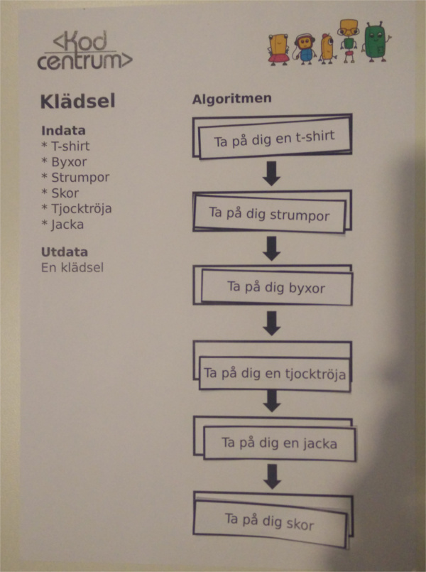
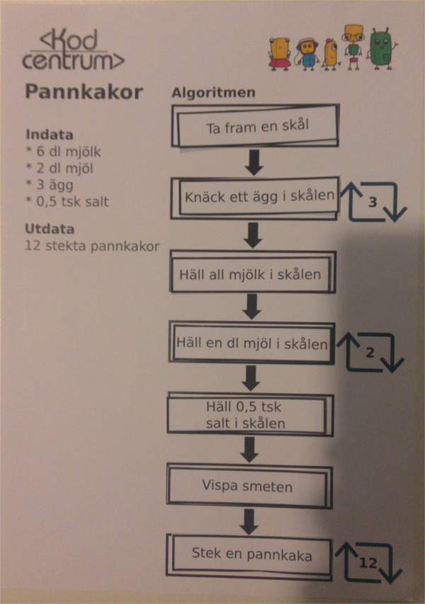
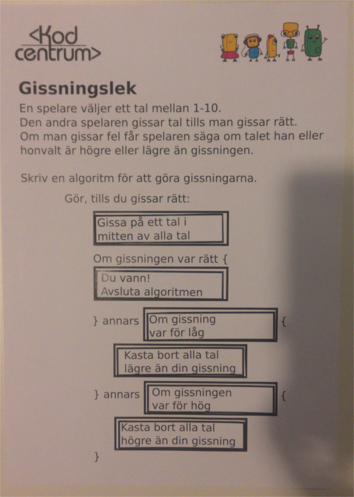

Skapa dina egna algoritmer med exempel från vardagen
Denna lek går ut på att barnen får ett problem att lösa och ska sedan bygga upp en algoritm för att lösa detta problem. Algoritmen byggs upp med hjälp av materialet som kan laddas ned. De får en skiss av algoritmen och ska sedan placera rätt block på rätt plats och i rätt ordning. Det finns tre algoritmer i stigande svårighetsgrad. Rekommendation är att bara köra den svåra uppgiften till barn som verkar vara extra taggade på leken då den är rätt klurig. När jag kört uppgiften känns det även som två algoritmer räcker för att få ut det mesta av leken.
Tidåtgång: Ca 15min
Lämpligt för 1-2 barn i taget.
Uppgifterna kan få önskat resultat med olika lösningar (precis som i riktig programmering) men här är lösningsförslag på uppgifterna.



Som ovan fast att du som handledare lägger ut blocken i fel ordning. Barnens uppgift är sedan att debugga algoritmen. Alltså lägga blocken i rätt ordning.